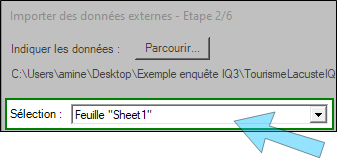
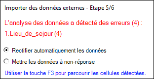

IMPORTER DES DONNÉES EXTERNES
Cette partie vous permet d'importer des données externes présentes dans des fichiers tabulés (Excel, CSV, TEXT, etc.), des bases de données ou encore des études statistiques.
Pour importer des données provenant d'une source externe, procédez comme suit :
-
Depuis le panneau d’accueil, partie Diffusion et Collecte, cliquez sur Importer des données externes.
Ou depuis le Tableur, onglet Données, cliquez sur Importer.
-
Sélectionnez le type de fichier externe à importer.
-
Cliquez sur Suivant.
-
Cliquez sur Parcourir pour charger le fichier à importer.

REMARQUE : Dans le cas d'un fichier Excel, vous devez également sélectionner la feuille à utiliser depuis le menu déroulant Sélection.

-
Procédez à la configuration des paramètres d'import :
-
Définir le nombre de lignes à ignorer au début et à la fin.
-
Indiquer que la 1ère ligne contient les noms des variables.
-
Indiquer que la 2ème ligne contient le libellé des variables.
-
Définir les lignes vides à ignorer (au début, à l'intérieur ou à la fin).
-
Définir les caractères à utiliser pour remplacer les non-réponses.
-
Définir le séparateur à utiliser pour identifier les questions multiples (par défaut c'est le point-virgule).
-
-
Affectez, ignorez ou créez les colonnes (variables) présentes dans votre fichier :
-
Ignorer : vous permet d’ignorer la colonne concernée afin qu’elle ne soit pas importée dans Sphinx iQ3.
-
Affecter à : vous permet d’associer la colonne sélectionnée à une variable de votre enquête.
REMARQUE : Si vos intitulés de colonnes correspondent exactement aux noms de variables dans votre enquête, cette option sera automatiquement cochée et proposera automatiquement la variable de votre enquête du même nom.
-
Créer : vous donne la possibilité de créer une variable dans l’enquête si la colonne de votre fichier ne peut être pas être associée à une variable de l’enquête.
REMARQUE :
- Si le nom de la colonne est coloré en bleu, cela veut dire que cette dernière est directement associée à une variable de votre enquête (car les variables portent le même nom).
- Si le nom de la colonne est grisé, cela veut dire que la variable n'existe pas dans l'enquête. Vous devez soit l'affecter à une variable existante dans votre enquête (la variable existe mais le nom est différent par exemple) ou la créer si elle ne peut pas être associée à une variable de l'enquête. Par défaut la variable sera ignorée. -
-
En cas d'éventuelles erreurs ou incohérences détectées, identifiez-les afin de les corriger soit en modifiant directement votre fichier ou :
-
En sélectionnant l'option Rectifier automatiquement les données.
-
En sélectionnant l'option Mettre les données en-non réponse.

-
-
Choisissez l'option à utiliser en fonction de l'import que vous souhaitez effectuer :
-
Créer de nouvelles observations : cette option vous permettra de créer de nouvelles observations qui se rajouterons aux observations déjà présentes dans l'enquête,
REMARQUE : Vous avez la possibilité de supprimer les observations déjà présentes dans l’enquête, attention cette option supprime toutes vos observations présentes ainsi votre enquête ne contiendra que les observations importées à partir de votre fichier.
-
Modifier les observations existantes : de l’enquête en utilisant comme référence l’ordre des observations ou la valeur unique à une question (exemple : un code client).
Si dans votre fichier de données, les valeurs d’une variable sont différentes des valeurs de la même variable dans Sphinx iQ3, alors ce sont les valeurs du fichier de données (Excel par exemple) qui viendront remplacer celles de votre jeu de données dans Sphinx iQ3.
-
(Facultatif) Cochez l’option « Créer des modalités pour les nouvelles valeurs des questions fermées » afin d’ajouter de nouvelles réponses (présentes dans votre fichier à importer) dans les questions fermées de votre enquête.
EXEMPLE : Dans votre fichier importé, une question fermée unique (Oui/Non) a la valeur « Ne sait pas ». Cette modalité sera ajoutée comme nouvelle modalité à votre variable dans Sphinx iQ3, qui proposera ainsi les modalités « Oui », « Non » et « Ne sait pas ».
-
(Facultatif) Cochez l'option Recalculer toutes les variables pour recalculer automatiquement les valeurs d'une variable calculée (moyenne entre plusieurs variables par exemple).
REMARQUE : À savoir qu'il vous est possible de relancer le calcul d'une variable calculée en cliquant sur le bouton Recalculer depuis l'onglet Données.
-
-
Cliquez sur Terminer pour valider l'import de données externes dans votre enquête.